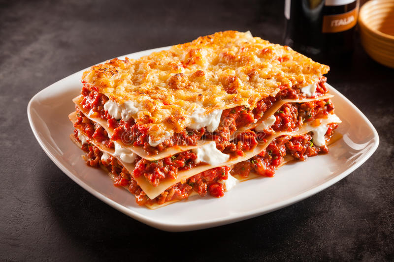

Lasagna (plural “lasagne”) is a flat and expanded pasta sheet, traditionally made in Italy with Parmigiano-Reggiano (Parmesan cheese), Béchamel sauce (white sauce), and ragù (a meat-based sauce). Despite the traditional form still being popular, lasagna has taken on many different recipes over the years.
Lasagna is an all time favourite in most households, whether it be lunch or dinner, heck what's stopping you from making it a breakfast favourite. If you were looking for the best lasagna recipe, you're in luck, we have it right here. Just follow the steps below and create the best lasagna dish ever. Trust me, your taste buds will thank you.